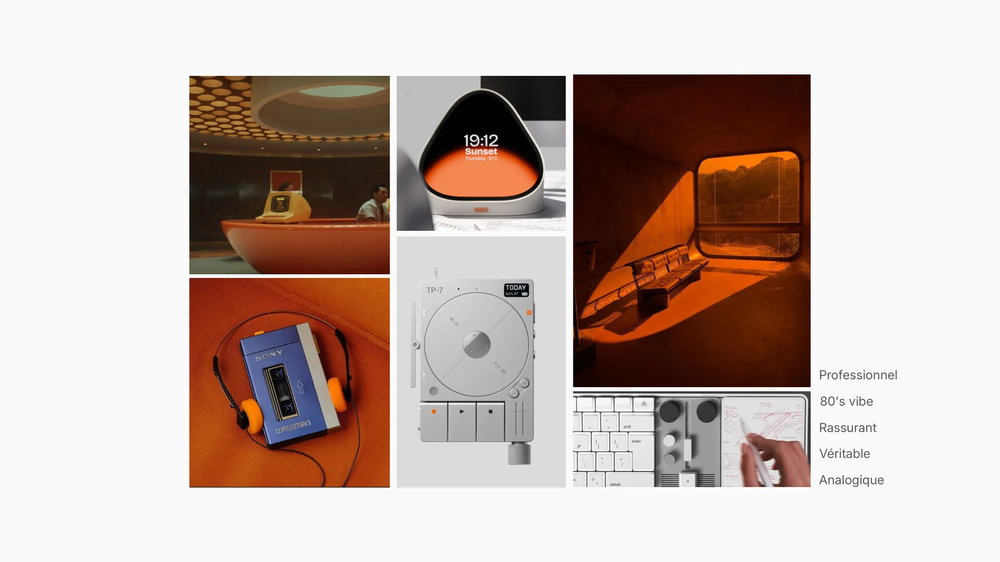
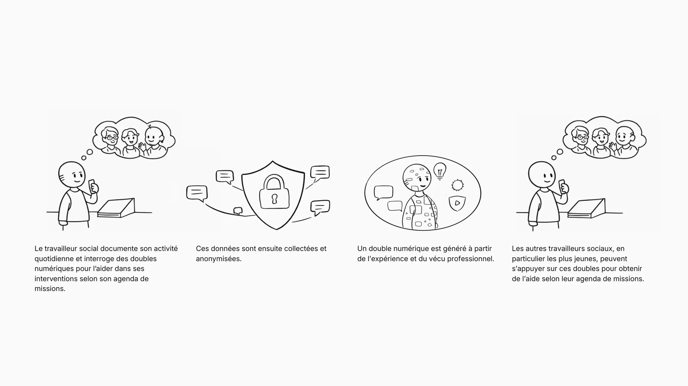
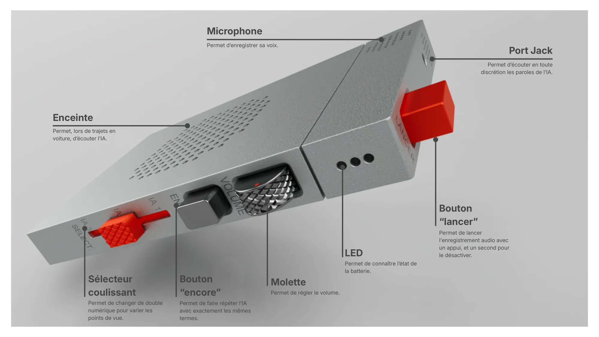
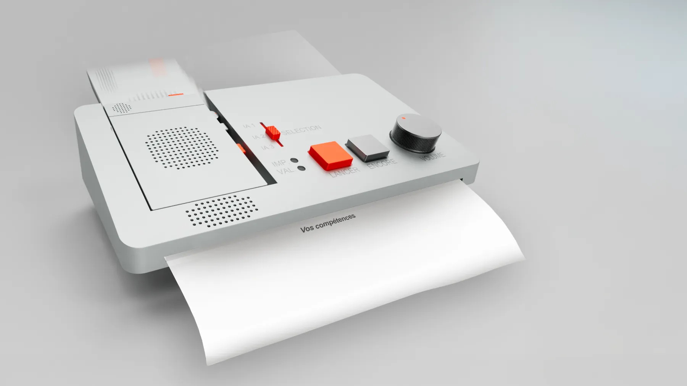

Projet 022025
Transformer l’expérience vécue des travailleurs sociaux, collectée et anonymisée, en doubles numériques qui soutiennent l’intervention, facilitent l’insertion professionnelle et transmettent les savoirs aux plus jeunes.
LIAWALK
Comment l’IA peut-elle réconcilier performance institutionnelle et reconnaissance humaine pour redonner du sens à l’action publique ?

Intention
Professionnel, 80’s vibe, véritable, analogique, rassurant.

Scénario
Des doubles numériques nés du vécu professionnel.
Documenter
Le travailleur social documente son activité quotidienne et interroge des doubles numériques pour l’aider dans ses interventions selon son agenda de missions.
Anonymiser
Ces données sont ensuite collectées et anonymisées.
Générer
Un double numérique est généré à partir de l’expérience et du vécu professionnel.
Transmettre
Les autres travailleurs sociaux, en particulier les plus jeunes, peuvent s’appuyer sur ces doubles pour obtenir de l’aide selon leur agenda de missions.
Anatomie
Des commandes physiques, une fonction chacune.
Sélecteur coulissant
Change de double numérique pour varier les points de vue.
Bouton « encore »
Fait répéter l’IA avec exactement les mêmes termes.
Bouton « lancer »
Lance l’enregistrement audio d’un appui, le désactive au second.
Molette · LED
Règle le volume · indique l’état de la batterie.
Enceinte · micro · jack
Écouter l’IA en voiture, enregistrer sa voix, écouter en toute discrétion.


IA embarquée
Les données restent sur l’objet.
Le dispositif embarque une IA de traitement des données qui permet de traiter les informations directement en local, sans avoir besoin de les transférer via un cloud.
Station
« LIA, imprime-moi mes compétences. »
La zone dédiée accueille la partie mobile qui enregistre et traite les données en déplacement grâce à l’IA embarquée. Les informations sont ensuite transférées vers le dispositif fixe pour être imprimées ou numérisées, tout en alimentant quotidiennement le mobile avec des doubles numériques liés aux interventions et favorisant la sécurité des données.
